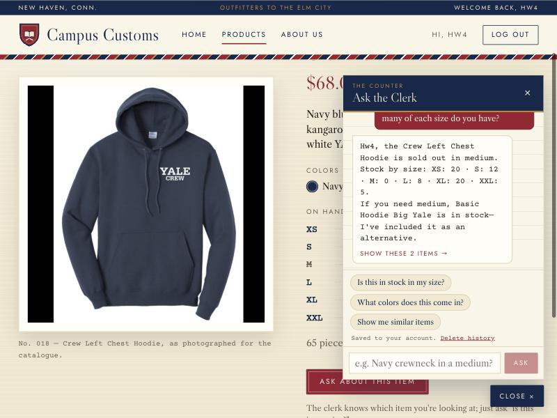
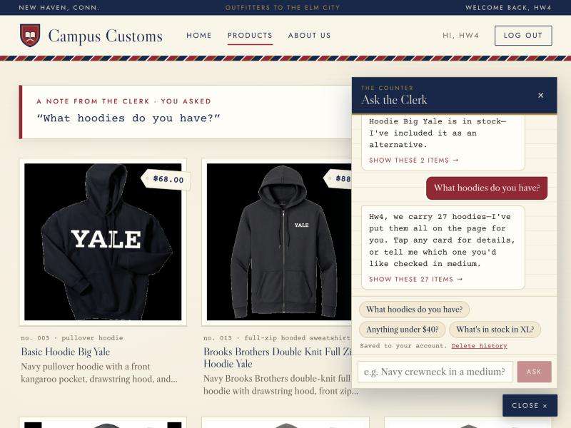
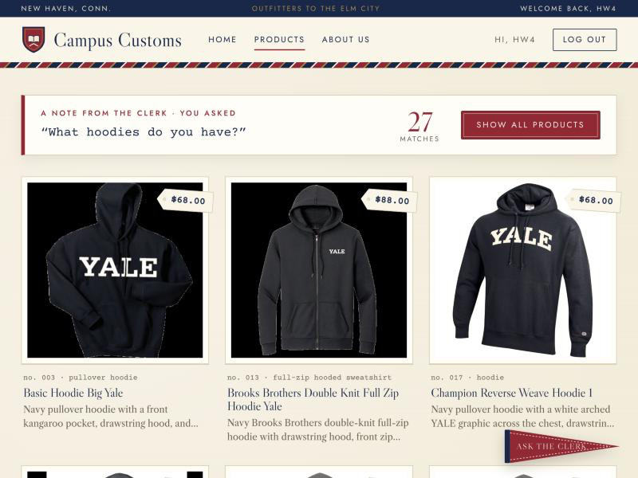
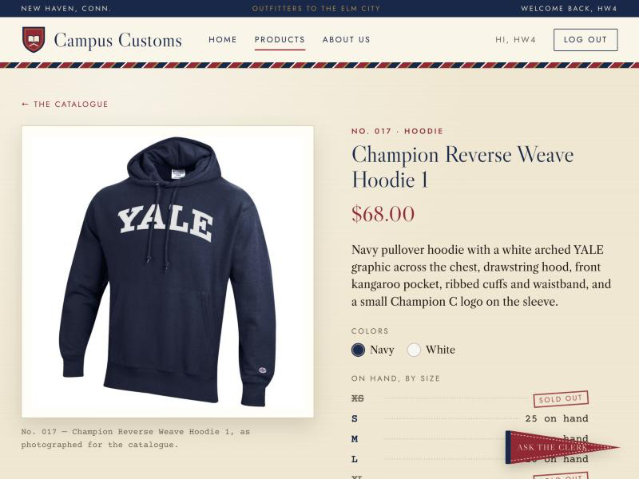
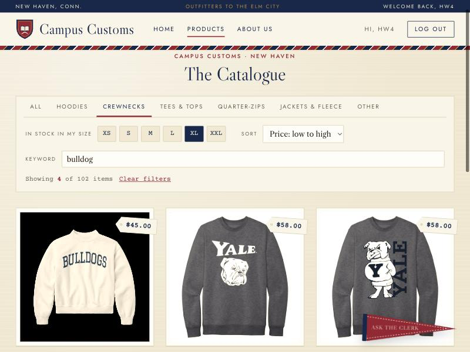
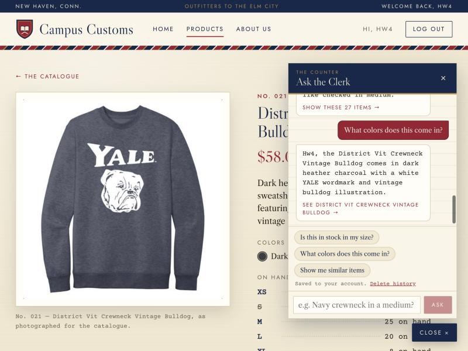
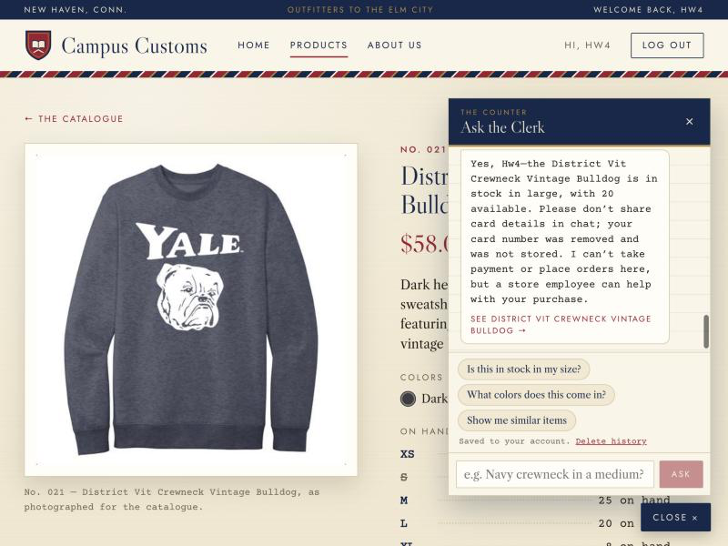

How to reproduce: run the back end (cd backend && uvicorn main:app --reload --port 8000) and front end (cd frontend && npm run dev), open http://localhost:5173, and ask the same questions in the chat (the pennant at the bottom right, "Ask the Clerk").
Check 1 of 3
Chat checking the inventory level of an item
Steps: opened the Crew Left Chest Hoodie product page, clicked Ask about this item, and typed: “Is this in stock in a medium? How many of each size do you have?”

Screenshot 1 — The clerk answers from the check_stock tool: medium is sold out, and each size's count is listed. It understood “this” as the product on screen (Problem 8 page context).
What this proves: the agent reports honest stock straight from the database. It says “sold out” clearly instead of offering the size, and suggests an alternative that really has a medium.
Database cross-check
SELECT size, quantity FROM inventory WHERE product_id = 'crew-left-chest-hoodie';
XS 20 | S 12 | M 0 | L 8 | XL 20 | XXL 5 → matches the chat reply exactly
SELECT price FROM catalogue WHERE product_id = 'crew-left-chest-hoodie'; → 68.0 (the page shows $68.00)
Check 2 of 3
Dynamic search-result cards after a category question
Steps: from the home page, asked the chat: “What hoodies do you have?”

Screenshot 2a — The agent searched the catalogue with find_products and returned the matching product_ids. The site jumped to the Products page and drew the cards.

Screenshot 2b — The banner shows the question and the count (27 matches). Each card has the photo, name, price, and short description. Show all products brings back the full catalogue.

Screenshot 2c — Clicking a card the chat put on the page opens the same single-item page as Problem 3: a large photo on one side and full details on the other.
What this proves: the agent returns structured matches (AgentAnswer.product_ids), the back end rebuilds each card from the database (ChatReply.products), and the front end renders them as working cards. That is the Problem 7 API contract, end to end.
Check 3 of 3
Usability features added in Problem 9
The required check is F1. F2 and B2 are shown as extra evidence (see output/usability.md).
F1 — Catalogue filter bar (required check)
Steps: on the Products page, chose Crewnecks, In stock in my size: XL, Price: low to high, and typed “bulldog”.

Screenshot 3a — 102 products narrowed to the 4 bulldog crewnecks that are actually in stock in XL, cheapest first. The filters are saved in the address bar (/products?cat=crewnecks&size=XL&sort=price-asc&q=bulldog), so the view can be shared or reloaded.
F2 — Context-aware quick questions (extra)

Screenshot 3b — On a product page the chat offers product questions. One tap on “What colors does this come in?” returned the database colors (["dark heather charcoal", "white"]) without typing the product name.
B2 — Safety guard (extra)

Screenshot 3c — A test card number (4111 1111 1111 1111, the standard test number) was scrubbed before the model or database saw it. The clerk still answered the stock question and warned the shopper.
Saved history for this shopper (GET /api/chat/history):
"Can I buy this in a large? My card is [card number removed]"
SELECT COUNT(*) FROM chat_messages WHERE content LIKE '%4111%'; → 0
What this proves: the Problem 9 features exist and work in the running app, not just in the write-up.